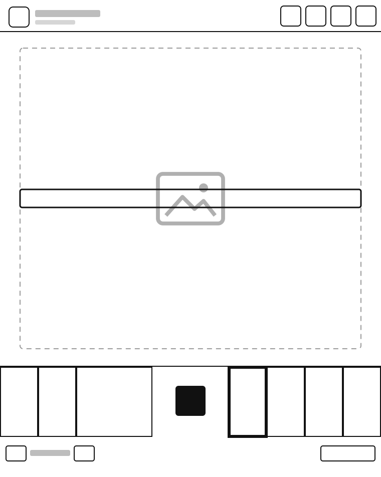
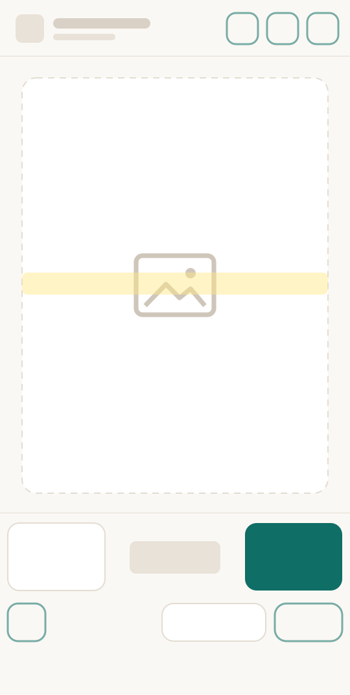
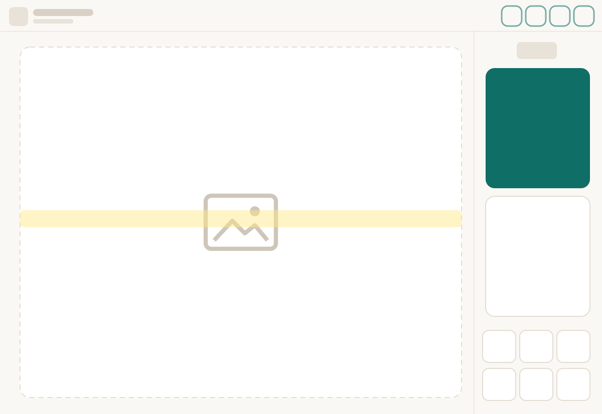

Gabi Knits
Sticka efter diagram, varv för varv.
Gabi Knits öppnar dina PDF-mönster, hittar diagrammet på sidan och markerar tydligt varvet du stickar. Framstegen i varje projekt sparas automatiskt.
Kommer snart till Google PlayAndroid-telefoner · surfplattor · BOOX e-ink-plattor
Inget konto · ingen reklam · ingen spårning



Så fungerar det
Tre steg från PDF till stickorna.
Öppna ditt mönster
Lägg till ett PDF-mönster som projekt. Det får ett eget namn och minns var du slutade.
Tryck på diagrammet
Gabi Knits hittar själv diagrammets ram och varv. Kanterna kan du justera vid behov.
Sticka varv för varv
Det aktuella varvet är tydligt markerat. En stor knapp tar dig till nästa varv – enkelt med en hand.
Vad den kan
Bara det som hjälper dig att sticka klart varvet – inget som är i vägen.
- Flera diagram i ett mönsterFramstycke, bakstycke och ärmar – varje diagram minns sitt varv och sin historik.
- Byt med ett tryckEn flytande lista eller en list vid varvräknaren som aldrig täcker sidan.
- Teckenförklaringen till handsMarkera teckenförklaringen en gång och öppna den över sidan utan att tappa varvet.
- Varvet följer digDiagrammet kan flytta sig under en fast list – det aktuella varvet stannar mitt på skärmen.
- SticktidSe hur lång tid ett projekt tog – klockan går bara när du startar den.
- Sex språkSvenska, engelska, polska, tyska, norska och danska.
för e-ink
Lugn på e-ink
Gabi Knits skapades på en BOOX Note Air. På e-ink finns inga animationer eller färger som bär betydelse – svart på vitt, stora knappar och stora varvnummer som syns ovanför stickningen. På telefoner och vanliga surfplattor använder den färg och mjuka rörelser.
Pris
Prova allt gratis i 14 dagar. Välj sedan det som passar dig.
En gratis provperiod per Google-konto. Priserna är i euro; Google Play visar priset i din valuta. Säg upp när som helst i Google Play.
Dina mönster stannar hos dig
- Inget konto
- Ingen reklam
- Ingen spårning eller analys
- Fungerar utan internet
Dina PDF-mönster, projekt och varvnummer stannar på din enhet. Appen använder internet bara för att genomföra ett köp och kontrollera att du har åtkomst.
Läs integritetspolicyn →Frågor
Behöver jag ett konto?
Nej. Ingen registrering och ingen inloggning. Köp går via ditt Google Play-konto.
Fungerar den utan internet?
Ja. Läsning och stickning kräver aldrig internet. Anslutning behövs bara för att köpa och ibland för att bekräfta prenumerationen.
Vilka enheter fungerar den på?
Android 8.1 eller senare: telefoner, surfplattor och BOOX e-ink-plattor med Google Play.
Vilka mönster passar?
PDF-mönster med ett diagram på ett rutnät. Testad på dussintals DROPS-diagram; appen hittar själv rutnätet och varven, och kanterna kan du justera för hand.
Vad kan jag göra utan att köpa?
Lägga till projekt, öppna mönster, bläddra bland sidorna och markera diagram. Att sticka varv för varv med markerat varv kräver den gratis provperioden eller ett köp.
Jag har en ny telefon. Betalar jag igen?
Nej. Installera Gabi Knits med samma Google-konto och tryck på ”Återställ köp”.
Hur säger jag upp prenumerationen?
I Google Play: Betalningar och prenumerationer → Prenumerationer. Dina projekt stannar där de är.
Finns det en version för iPhone eller iPad?
Inte än – Android kommer först.